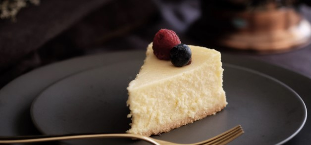

Look no further for a creamy and ultra smooth classic cheesecake recipe! Paired with a buttery graham cracker crust, no one can deny its simple decadence. For the best result, bake in a water bath.

Ingredients
1 and 1/2 cupsgraham cracker crumbs (about 10 full sheet graham crackers)
5 Tablespoonsunsalted butter, melted